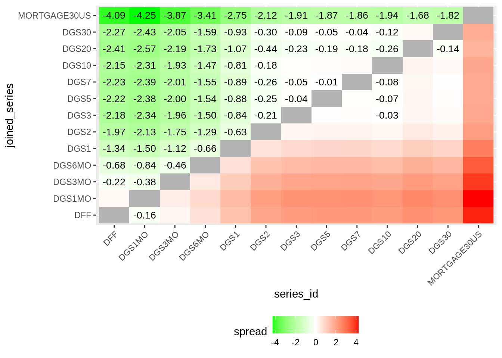
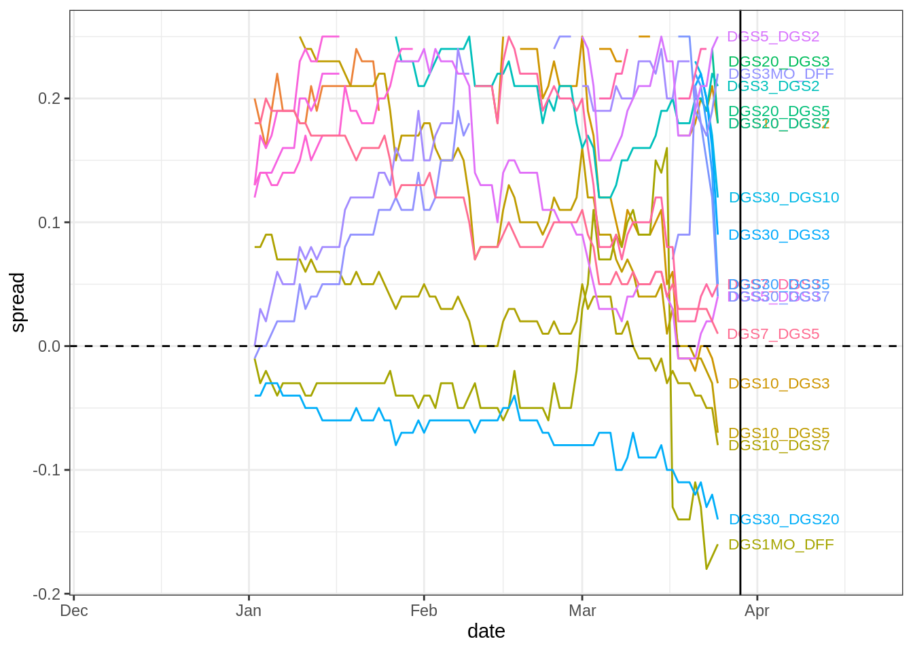
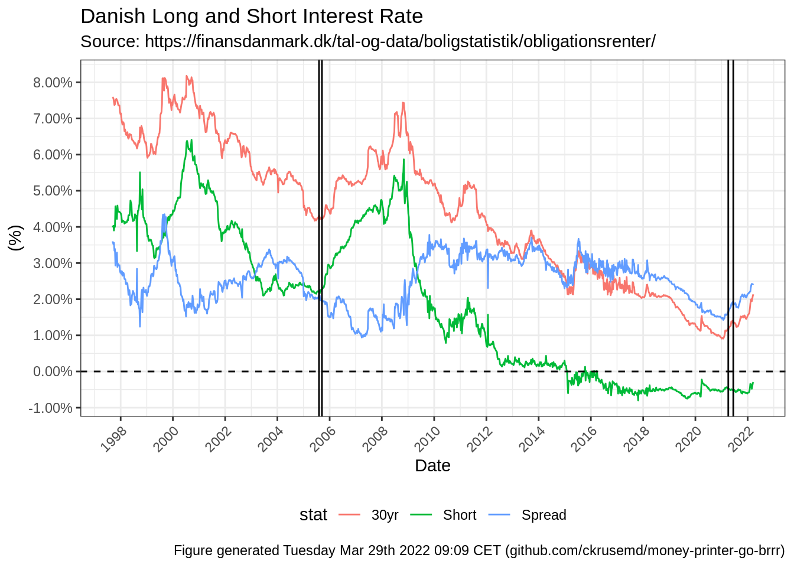
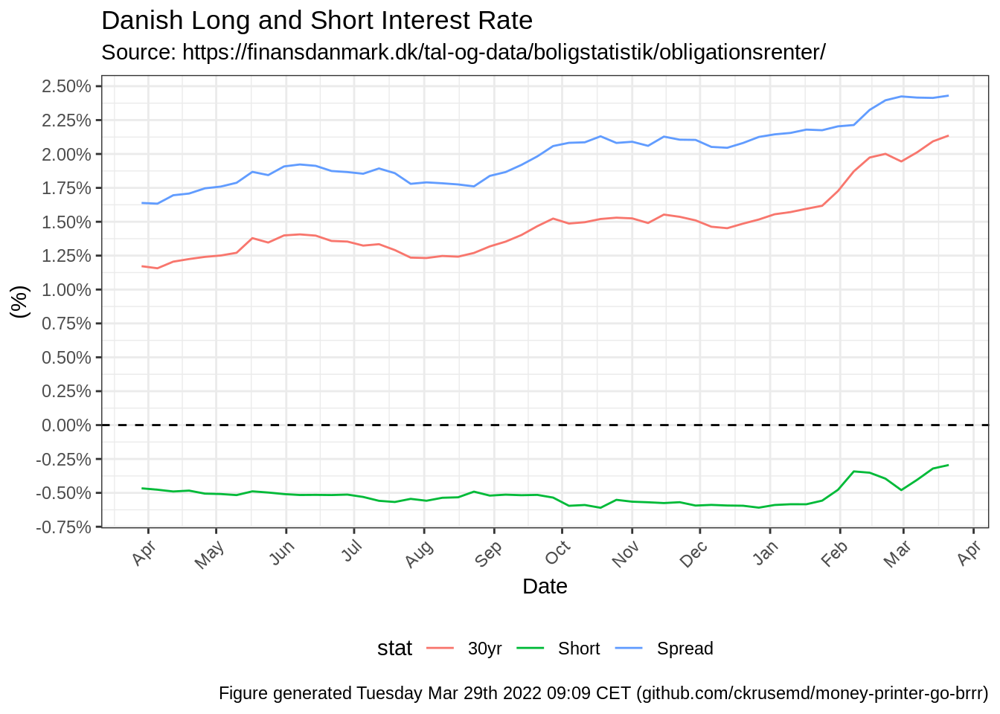
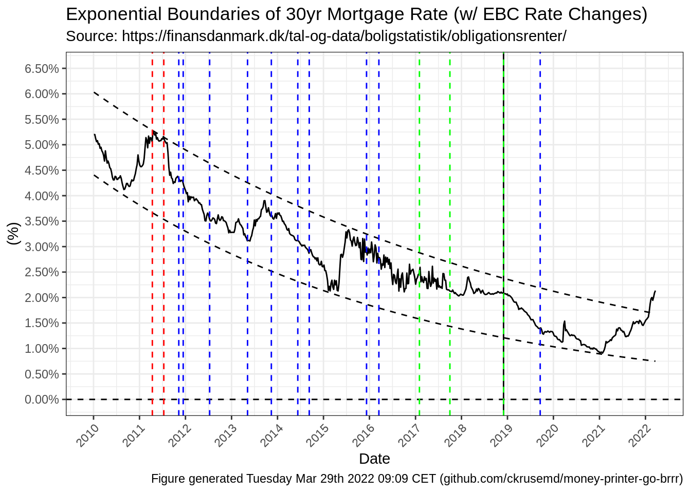
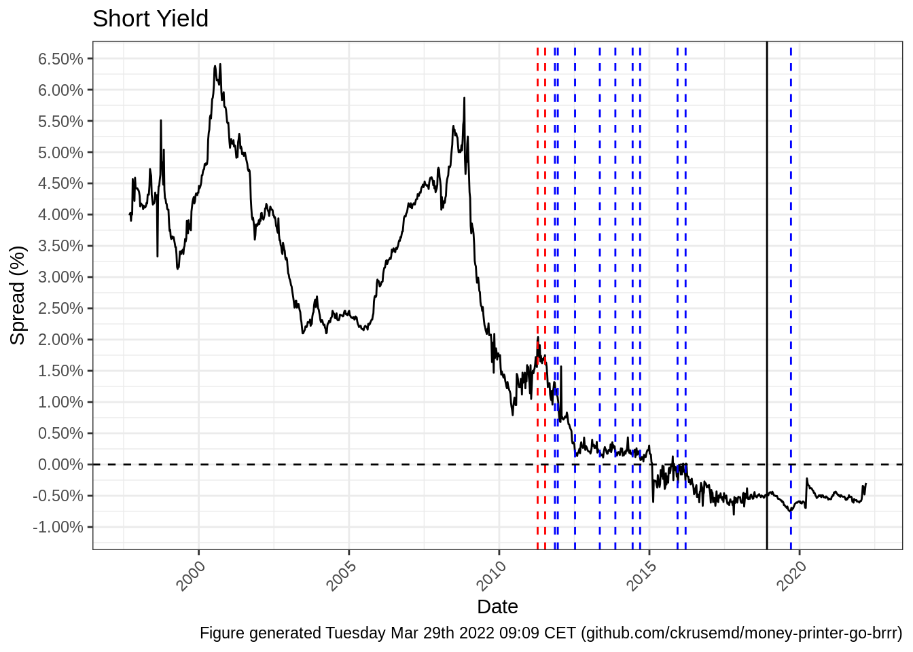
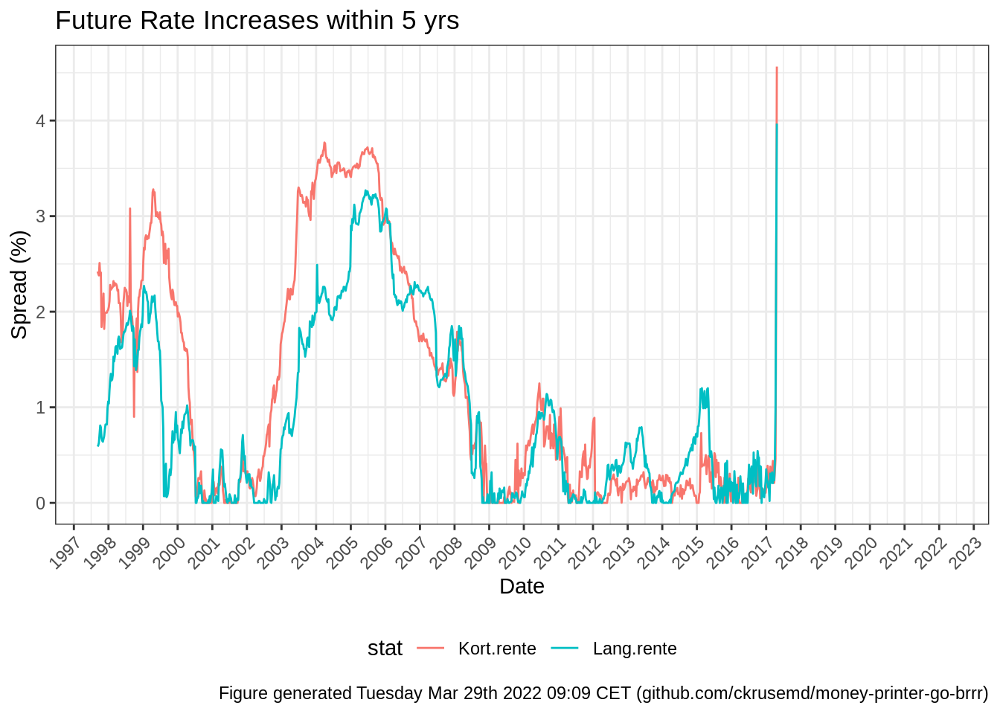
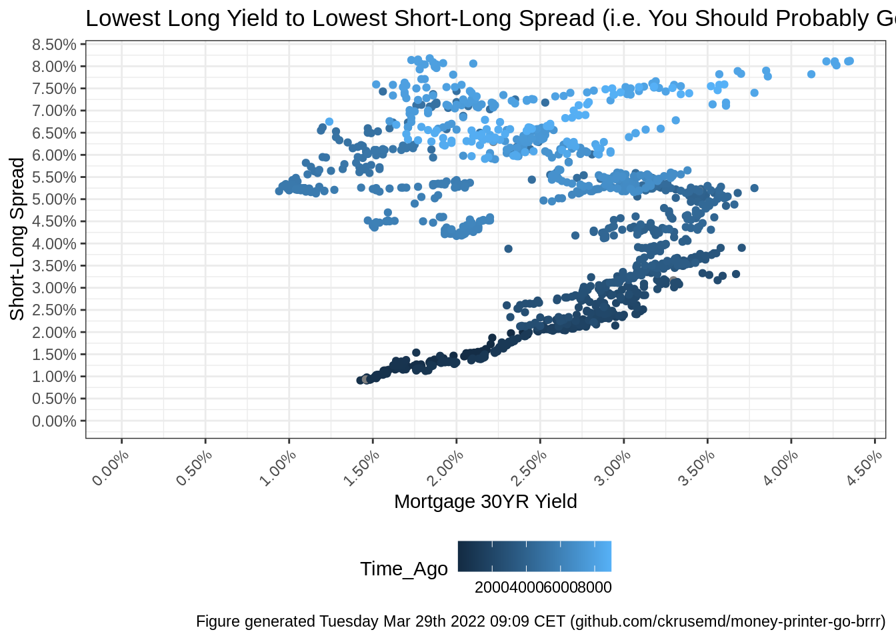

4 Yield Checkboard
## Joining, by = "series_id"## Warning: Removed 91 rows containing missing values (geom_text).
## Warning: No renderer available. Please install the gifski, av, or magick package
## to create animated output## NULL## Warning in mask$eval_all_mutate(quo): NAs introduced by coercion
## Warning in mask$eval_all_mutate(quo): NAs introduced by coercion## Warning: Removed 4501 row(s) containing missing values (geom_path).## Warning: Removed 4589 rows containing missing values (geom_text).
4.1 Obligationsrenter
## Installing package into '/home/runner/work/_temp/Library'
## (as 'lib' is unspecified)##
## openxlsx installed## Installing package into '/home/runner/work/_temp/Library'
## (as 'lib' is unspecified)##
## zoo installedsource_url = "https://finansdanmark.dk/tal-og-data/boligstatistik/obligationsrenter/"
current_url = xml2::read_html(source_url) %>%
html_node("#wrapper > div > div.sectionB > div.container > div > div.span8 > p:nth-child(10) > a") %>%
rvest::html_attr("href")
xlsx_url = paste0("https://finansdanmark.dk/",current_url)df_interest = openxlsx::read.xlsx(xlsxFile = xlsx_url,startRow = 3)
df_interest$Date = as.Date(paste(df_interest$År, df_interest$Uge, 1, sep="-"), "%Y-%U-%u")## Warning in strptime(x, format, tz = "GMT"): (0-based) yday 369 in year 2020 is
## invalid## Warning in strptime(x, format, tz = "GMT"): (0-based) yday 368 in year 2015 is
## invalid## Warning in strptime(x, format, tz = "GMT"): (0-based) yday 368 in year 2009 is
## invalid## Warning in strptime(x, format, tz = "GMT"): (0-based) yday 368 in year 1998 is
## invaliddf_interest = df_interest %>%
dplyr::select(Date,Kort.rente,Lang.rente) %>%
dplyr::mutate( CurveLongShort = Lang.rente - Kort.rente )df_interest %>%
gather(stat,val,Kort.rente:CurveLongShort) %>%
dplyr::mutate(stat=recode(stat,"Kort.rente"="Short","Lang.rente"="30yr","CurveLongShort"="Spread")) %>%
dplyr::mutate(val=val/100) %>%
ggplot(.,aes(x=Date,y=val,color=stat)) +
geom_line() +
scale_x_date(date_breaks = "2 years",date_labels = "%Y") +
scale_y_continuous(labels = scales::percent,breaks = seq(-0.03,0.1,by=0.01)) +
geom_vline(data=data.frame(Date=c(ymd("2005-08-05"),ymd("2005-09-15"),ymd("2021-04-05"),ymd("2021-06-14"))),aes(xintercept=Date)) +
geom_hline(yintercept = 0,linetype=2) +
theme_money_printer_go_brrr +
labs(title="Danish Long and Short Interest Rate",
subtitle=paste0("Source: ",source_url),
x="Date",
y="(%)",
caption = timestamp_caption())## Warning: Removed 12 row(s) containing missing values (geom_path).
df_interest %>%
filter(Date>=Sys.Date()-years(1)) %>%
gather(stat,val,Kort.rente:CurveLongShort) %>%
dplyr::mutate(stat=recode(stat,"Kort.rente"="Short","Lang.rente"="30yr","CurveLongShort"="Spread")) %>%
dplyr::mutate(val=val/100) %>%
ggplot(.,aes(x=Date,y=val,color=stat)) +
geom_line() +
scale_x_date(date_breaks = "1 month",date_labels = "%b") +
scale_y_continuous(labels = scales::percent,breaks = seq(-0.03,0.1,by=0.0025)) +
geom_hline(yintercept = 0,linetype=2) +
theme_money_printer_go_brrr +
labs(title="Danish Long and Short Interest Rate",
subtitle=paste0("Source: ",source_url),
x="Date",
y="(%)",
caption = timestamp_caption())
lm_low = data.frame(Date=c(ymd("2013-01-01","2015-01-01","2021-01-01")),
Lang.Rente=c(3.0,2.0,0.91)) %>%
lm(log(Lang.Rente)~Date,data=.)
lm_high = data.frame(Date=c(ymd("2011-04-01","2015-07-01")),
Lang.Rente=c(5.3,3.4)) %>%
lm(log(Lang.Rente)~Date,data=.)
df_interest %>%
filter(Date>=ymd("2010-01-01")) %>%
dplyr::mutate(Lang.rente=Lang.rente/100) %>%
dplyr::mutate(Pred_High=exp(predict(lm_high,.))/100,
Pred_Low=exp(predict(lm_low,.))/100) %>%
ggplot(.,aes(x=Date,y=Lang.rente)) +
geom_line() +
geom_line(aes(y=Pred_High),linetype=2) +
geom_line(aes(y=Pred_Low),linetype=2) +
scale_y_continuous(limits=c(0,0.065),breaks = seq(0,0.065,by=0.005),labels = scales::percent) +
scale_x_date(date_breaks = "1 year",date_labels = "%Y") +
geom_hline(yintercept = 0,linetype=2) +
geom_vline(xintercept = dmy("01-12-2018")) +
geom_vline(xintercept = c(dmy("09-11-2011"),
dmy("14-12-2011"),
dmy("11-07-2012"),
dmy("13-11-2013"),
dmy("08-05-2013"),
dmy("11-06-2014"),
dmy("10-09-2014"),
dmy("09-12-2015"),
dmy("16-03-2016"),
dmy("18-09-2019")),color="blue",linetype=2) +
geom_vline(xintercept = c(dmy("13-04-2011"),
dmy("13-07-2011")),color="red",linetype=2) +
geom_vline(xintercept = c(dmy("01-02-2017"),
dmy("01-10-2017"),
dmy("01-12-2018")),color="green",linetype=2) +
theme_money_printer_go_brrr +
labs(title="All Yields (Last Year)",
x="Date",
y="Spread (%)",
caption = timestamp_caption()) +
theme_money_printer_go_brrr +
labs(title="Exponential Boundaries of 30yr Mortgage Rate (w/ EBC Rate Changes)",
subtitle=paste0("Source: ",source_url),
x="Date",
y="(%)",
caption = timestamp_caption())
df_interest %>%
dplyr::mutate(Kort.rente=Kort.rente/100) %>%
ggplot(.,aes(x=Date,y=Kort.rente)) +
geom_line() +
scale_y_continuous(limits=c(-0.01,NA),breaks = seq(-0.01,0.07,by=0.005),labels = scales::percent) +
geom_vline(xintercept = dmy("01-12-2018")) +
geom_vline(xintercept = c(dmy("09-11-2011"),
dmy("14-12-2011"),
dmy("11-07-2012"),
dmy("13-11-2013"),
dmy("08-05-2013"),
dmy("11-06-2014"),
dmy("10-09-2014"),
dmy("09-12-2015"),
dmy("16-03-2016"),
dmy("18-09-2019")),color="blue",linetype=2) +
geom_vline(xintercept = c(dmy("13-04-2011"),
dmy("13-07-2011")),color="red",linetype=2) +
geom_hline(yintercept = 0,linetype=2) +
theme_money_printer_go_brrr +
labs(title="Short Yield",
x="Date",
y="Spread (%)",
caption = timestamp_caption())## Warning: Removed 4 row(s) containing missing values (geom_path).
df_interest %>%
dplyr::select(Date,Kort.rente,Lang.rente) %>%
gather(stat,val,Kort.rente:Lang.rente) %>%
group_by(stat) %>%
# arrange(stat,desc(Date)) %>%
arrange(stat,Date) %>%
dplyr::mutate(FutureMax=rollmax(val,k = 5*52,fill = NA,align = "left")-val) %>%
ggplot(.,aes(x=Date,y=FutureMax,color=stat)) +
geom_line() +
scale_x_date(date_breaks = "1 years",date_labels = "%Y") +
theme_money_printer_go_brrr +
labs(title="Future Rate Increases within 5 yrs",
x="Date",
y="Spread (%)",
caption = timestamp_caption())## Warning: Removed 518 row(s) containing missing values (geom_path).
df_interest %>%
dplyr::mutate(Lang.rente=Lang.rente/100,
CurveLongShort=CurveLongShort/100) %>%
dplyr::mutate(Time_Ago=as.numeric(Sys.Date()-Date)) %>%
ggplot(.,aes(y=Lang.rente,x=CurveLongShort,color=Time_Ago)) +
geom_point() +
scale_y_continuous(limits=c(0,NA),breaks = seq(0,0.1,by=0.005),labels = scales::percent) +
scale_x_continuous(limits=c(0,NA),breaks = seq(0,0.1,by=0.005),,labels = scales::percent) +
theme_money_printer_go_brrr +
labs(title="Lowest Long Yield to Lowest Short-Long Spread (i.e. You Should Probably Go Fixed Right About Now)",
x="Mortgage 30YR Yield",
y="Short-Long Spread",
caption = timestamp_caption())